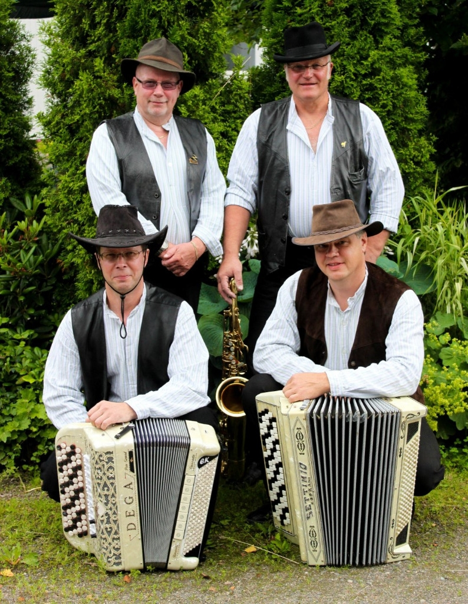

Taika-yhtye sai alkunsa syksyllä 2004, jolloin fonistillamme Jaakko Heikkilällä oli tarve kasata bändi muutamaa keikkaa varten Humppilassa sijaitsevaan Otsolan Hovi ravintolaan. Jaakko tunsi Humppilassa asuvan Olli Kylä-Markulan ja kysyi tätä rumpaliksi, joka puolestaan kysyi Jari Mustajärveä hanuristiksi. Vielä tarvittiin basisti ja laulusolisti. Sekä Jarilla, että Ollilla oli yhteisiä soittokokemuksia loimaalaisen Kyösti Vaittisen kanssa, joten hänet kutsuttiin bändiin mukaan. Yhtye oli näin saanut alkuperäisen kokoonpanonsa. Jaakon myymät keikat hoidettiin sovitusti ja koska homma tuntui toimivan mukavasti päätettiin jatkaa harjoittelua ja keikkailua sitä mukaa kun tilauksia tuli.